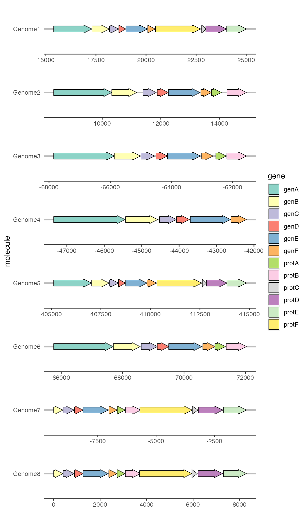
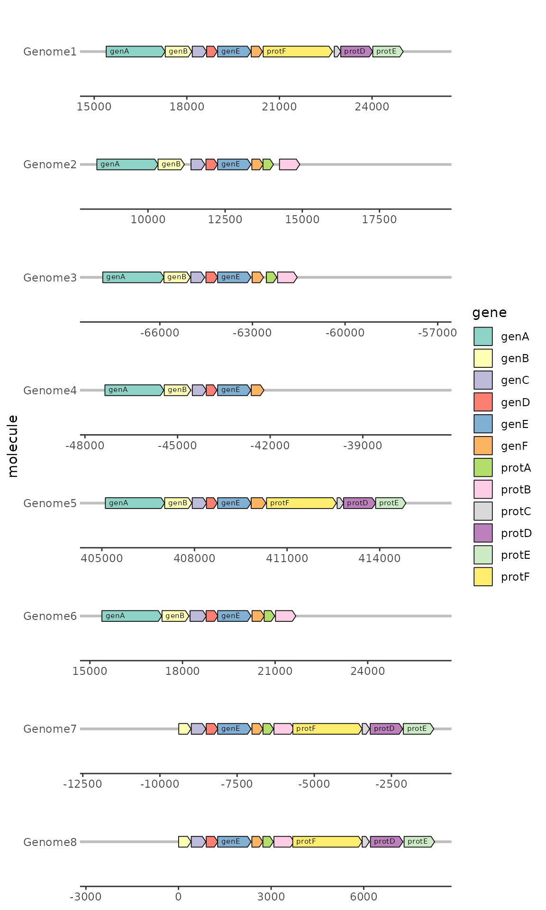
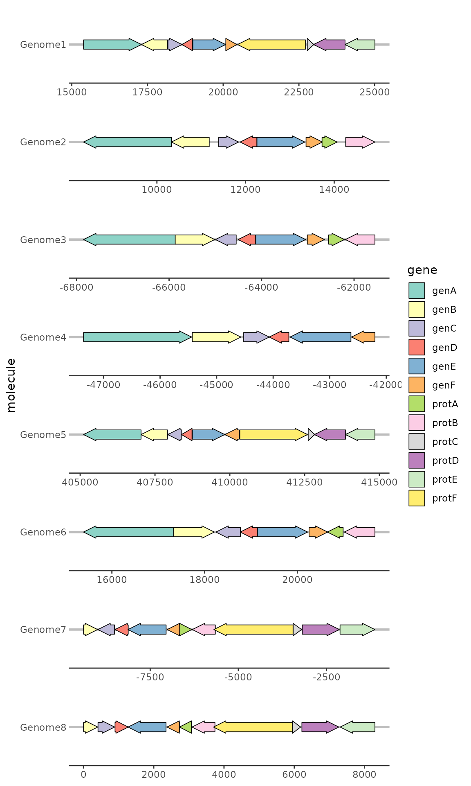
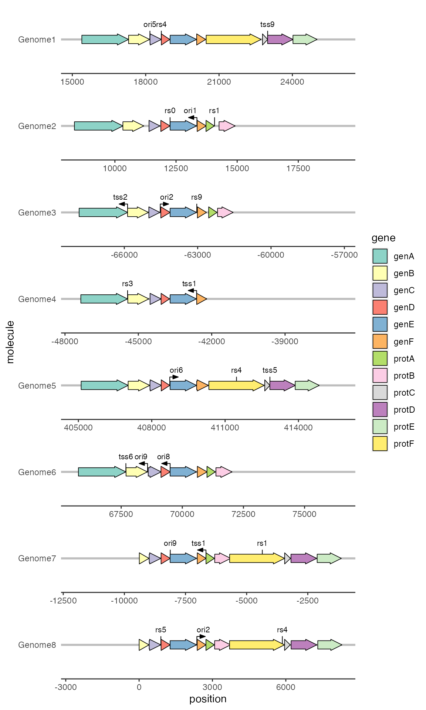

Introduction to ‘gggenes’
David Wilkins
2023-03-28
Source:vignettes/introduction-to-gggenes.Rmd
introduction-to-gggenes.Rmd‘gggenes’ is ggplot2 extension for drawing gene arrow maps.
Drawing gene arrows with geom_gene_arrow()
geom_gene_arrow() is a ‘ggplot2’ geom that represents
genes with arrows. The start and end locations of the genes within their
molecule(s) are mapped to the xmin and xmax
aesthetics respectively. These start and end locations are used to
determine the directions in which the arrows point. The y
aesthetic must be mapped to the molecule(s). If you are drawing more
than one molecule, and the numerical locations of the genes are not
similar across molecules, you almost certainly want to facet the plot
with scales = "free" to avoid drawing ridiculously large
molecules with ridiculously tiny genes.
library(ggplot2)
library(gggenes)
ggplot(example_genes, aes(xmin = start, xmax = end, y = molecule, fill = gene)) +
geom_gene_arrow() +
facet_wrap(~ molecule, scales = "free", ncol = 1) +
scale_fill_brewer(palette = "Set3")
Beautifying the plot with theme_genes()
Because the resulting plot can look cluttered, a ‘ggplot2’ theme
theme_genes() is provided with some sensible defaults.
ggplot(example_genes, aes(xmin = start, xmax = end, y = molecule, fill = gene)) +
geom_gene_arrow() +
facet_wrap(~ molecule, scales = "free", ncol = 1) +
scale_fill_brewer(palette = "Set3") +
theme_genes()
Aligning genes across facets with
make_alignment_dummies()
Often you will want a certain gene to be vertically aligned across
the faceted molecules. make_alignment_dummies() generates a
set of ‘dummy’ genes that if added to the plot with
ggplot2::geom_blank() will extend the range of each facet
to visually align the selected gene across facets.
dummies <- make_alignment_dummies(
example_genes,
aes(xmin = start, xmax = end, y = molecule, id = gene),
on = "genE"
)
ggplot(example_genes, aes(xmin = start, xmax = end, y = molecule, fill = gene)) +
geom_gene_arrow() +
geom_blank(data = dummies) +
facet_wrap(~ molecule, scales = "free", ncol = 1) +
scale_fill_brewer(palette = "Set3") +
theme_genes()
Labelling genes with geom_gene_label()
To label individual genes, provide a label aesthetic and
use geom_gene_label(). geom_gene_label() uses
the ‘ggfittext’
package to fit the label text inside the gene arrows; see the
‘ggfittext’ documentation for more details on how it resizes and reflows
text to make it fit.
ggplot(example_genes, aes(xmin = start, xmax = end, y =
molecule, fill = gene, label = gene)) +
geom_gene_arrow(arrowhead_height = unit(3, "mm"), arrowhead_width = unit(1, "mm")) +
geom_gene_label(align = "left") +
geom_blank(data = dummies) +
facet_wrap(~ molecule, scales = "free", ncol = 1) +
scale_fill_brewer(palette = "Set3") +
theme_genes()
Reversing gene direction with the optional forward
aesthetic
By default, genes arrows are drawn pointing in the direction implied
by xmin and xmax. You can override this with
the optional forward aesthetic, which can be useful when
the gene coordinates and orientation are encoded as separate
variables.
If forward is TRUE (the default), or any value that
coerces to TRUE such as 1, the gene will be drawn pointing in the
implied direction, i.e. from xmin to xmax. If
forward is FALSE, or any value that coerces to FALSE such
as 0, the gene will be drawn in the reverse of this implied
direction:
ggplot(example_genes, aes(xmin = start, xmax = end, y = molecule, fill = gene,
forward = orientation)) +
geom_gene_arrow() +
facet_wrap(~ molecule, scales = "free", ncol = 1) +
scale_fill_brewer(palette = "Set3") +
theme_genes()
Viewing subgene segments
We can highlight subgene segments, such as protein domains or local
alignments, using geom_subgene_arrow().
This works similarly to geom_gene_arrow(), but in
addition to xmin and xmax (which determine the
gene boundaries), we need the aesthetics xsubmin and
xsubmax to determine the subgene boundaries.
geom_gene_arrow() will produce pretty arrowheads, as long
as xmin >= xsubmin and xmax >= xsubmax
for all subgenes (subgenes that break gene boundaries will be skipped
with a warning).
The suggested usage is to use geom_gene_arrow() with no
fill, and then add a subgene layer over this:
ggplot(example_genes, aes(xmin = start, xmax = end, y = molecule)) +
facet_wrap(~ molecule, scales = "free", ncol = 1) +
geom_gene_arrow(fill = "white") +
geom_subgene_arrow(data = example_subgenes,
aes(xmin = start, xmax = end, y = molecule, fill = gene,
xsubmin = from, xsubmax = to), color="black", alpha=.7) +
theme_genes()
To label subgenes, we can use geom_subgene_label(),
which works similarly to geom_gene_label() with the major
difference that it requires xsubmin and
xsubmax aesthetics (not xmin and
xmax).
ggplot(subset(example_genes, molecule == "Genome4" & gene == "genA"),
aes(xmin = start, xmax = end, y = strand)
) +
geom_gene_arrow() +
geom_gene_label(aes(label = gene)) +
geom_subgene_arrow(
data = subset(example_subgenes, molecule == "Genome4" & gene == "genA"),
aes(xsubmin = from, xsubmax = to, fill = subgene)
) +
geom_subgene_label(
data = subset(example_subgenes, molecule == "Genome4" & gene == "genA"),
aes(xsubmin = from, xsubmax = to, label = subgene),
min.size = 0
)
Drawing point genetic features
We can draw point genetic features, such as restriction sites or
transcription start sites, with geom_feature(), and label
them with geom_feature_label(). Both of these geoms take an
optional forward aesthetic to indicate whether a feature is
oriented and, if so, in what direction (TRUE meaning
oriented towards the right and FALSE meaning towards the
left).
ggplot(example_genes, aes(xmin = start, xmax = end, y = molecule, fill = gene)) +
geom_feature(
data = example_features,
aes(x = position, y = molecule, forward = forward)
) +
geom_feature_label(
data = example_features,
aes(x = position, y = molecule, label = name, forward = forward)
) +
geom_gene_arrow() +
geom_blank(data = example_dummies) +
facet_wrap(~ molecule, scales = "free", ncol = 1) +
scale_fill_brewer(palette = "Set3") +
theme_genes()